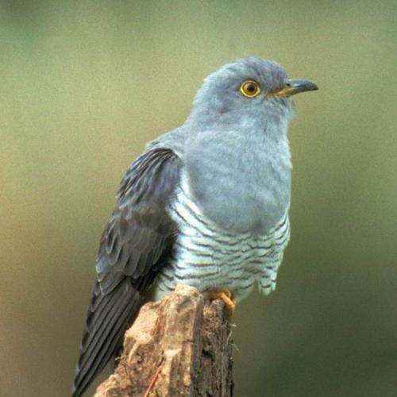

Kakukk
Cuculus canorus
A madarak (Aves) osztályának kakukkalakúak (Cuculiformes) rendjébe, ezen belül a kakukkfélék (Cuculidae) családjába tartozó faj. Költési időben előfordul Európa és a mérsékelt égövi Ázsia nagy részén. Vonuló madárként a telet Délkelet-Ázsiában, Közép- és Dél-Afrikában, valamint a Fülöp-szigeteken tölti. Testhossza körülbelül 33 centiméter, szárnyfesztávolsága 55-60 centiméter, testtömege 110-130 gramm. Tollazata világos, hátán szürkéskék színű, szürkén csíkozott alsó része hasonlít a karvalyéra. Lehetséges, hogy ez a hasonulás egy formája, amivel a kakukk elijeszti a kisebb madarat a fészkéről, hogy saját tojását belerakhassa. 12 tollú farka halvány hamuszürke. Főként rovarokkal, különösen nagy testű hernyókkal táplálkozik. Költési időben magányos madár, de a telelőhelyeken állítólag olykor csapatokban figyelhető meg. Vándor madár. A kakukk költési időszaka május–július közt van. Fészekparazita madár, mintegy 9-25 fészket is meglátogat, melyekbe egy-egy tojást rak[3]. Kedvenc gazdamadarai a nádirigó, a réti pityer és az erdei szürkebegy, de rajtuk kívül sok más madár fészkébe is rak tojást. A fiókák 12 nap után kelnek ki, rendszerint hamarabb, mint a gazdamadár fiókái. A frissen kelt kakukkfióka kilöki a fészekből a többi tojást, vagy akár a frissen kelt mostohatestvéreit is, ezért a mostohaszülők egyetlen fiókaként nevelik. A fiatal kakukkok 19-24 nap után repülnek ki, de csak 50 naposan önállósítják magukat, addig is a dajkamadár szülők etetik őket.